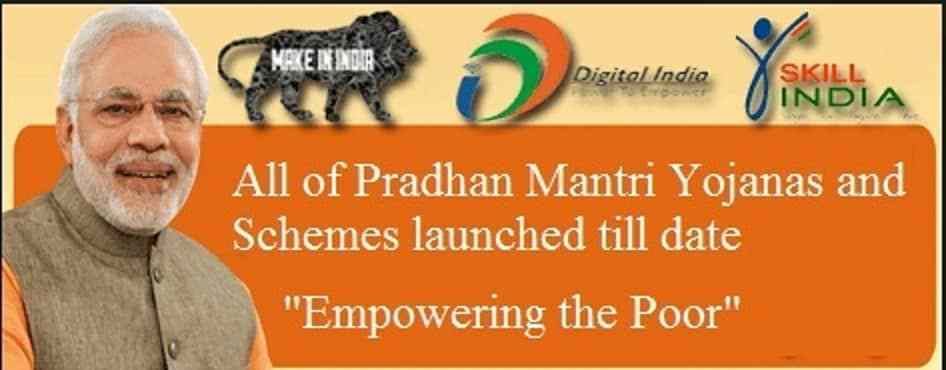

Aim to Change


Pradhan Mantri Jan Dhan Yojana (PMJDY)
Pradhan Mantri Jan Dhan Yojana (PMJDY)
Launched: 28 August 2014
Main Objective: Financial inclusion and access to financial services for all households in the country.
Pradhan Mantri Jan Dhan Yojana (PMJDY) is a national mission to bring comprehensive financial inclusion of all the households in the country. Under the PMJDY, any individual above the age of 10 years and does not ave a bank account can open a bank account without depositing any money.
The scheme was to ensure the access to financial services such as banking / savings & deposit
Accounts, remittance, credit, debit cards, insurance and pension in affordable manner. The scheme was mostly targeted to the people belonging to the Below Poverty Line but is beneficial to everyone who does not have a bank account.
Jan Dhan Yojana has seen a great success, about 21 Crore accounts have been opened in just about one and half year under the scheme. Out of the total 12.87 crore in rural area and 8.13 Crore accounts have been opened in urban areas. Despite of zero minimum balance, there is 33074.89 crore rupees balance in these accounts with 28.88% accounts opened with zero balance.
Official Website: http://www.pmjdy.gov.in